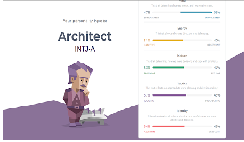
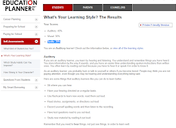
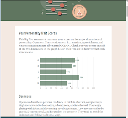

-

Myersbriggs Test
INTJ-A
-

Learning Style
Auditory Learner
-

Personality Test
Agreeable
Personal Profile
These tests show how I am often analysing things that happen around me. The Myers Briggs test shows that I am an Architect who is always in search of finding a better way to do things, therefore I often question everything and as a result, there could be frustrating if things are not going as planned. The education planner learning style quiz shows that I am mostly an auditory learner. As a result, I have a better time understanding verbal instructions than written ones. The personality test by truity.com reveals that I can be very agreeable to the people around me and that helping people is what I like to do. Truity.com also shows that I am very open to new ideas and I have an interest in others' art and culture.
I believe that with my personality, I will be able to recognise if there are any disruptions that happen and therefore the team won't be sidetracked by anything that comes up unexpectedly. These results may influence the way I interact with my co-workers as I am able to emotionally relate to them while also being logical in the way I respond. Also by being a learner by listening, it will be easier for me to listen and comprehend any instructions given to me by higher-ups during meetings. This will also help me with my soft skills as I will often observe how others interact and can learn from them.
By taking the results into account when forming a team, I believe that a team that can communicate with each other freely and be open to new ideas would be the ideal team for me. This is due to the fact that with an open-minded team, it will be easier for everyone to get their inputs out which can improve the application. Also, the team must be able to adapt to new challenges because when building a product the journey is not always easy and complications will arise. If a team like this is brought together, they will be able to tackle any problems.